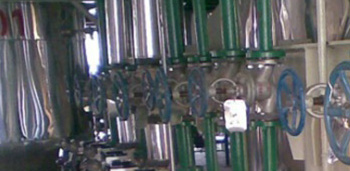

您只需一个电话，我们将提供合适的产品，竭诚为新老客户提供优质的服务！

选择我们的四大理由
Choose Our four reasons
01
品质保证
严格的进厂检验，确保原料质量；生产流程跟踪检测；通过多种国际严格检测与认证。02
高性价比
产品全、价格低、质量好、服务优、信誉高的综合生产器材的生产型企业03
快速响应
拥有专业的销售团队，为您提供完善的解决方案，一对一全程跟进订单。04
贴心售后
以客户为中心，给与客户最贴心的关怀，精心服务每个新老客户
科达仪表 您的不二选择
以质量求生存、向管理要效益 公司生产的流量仪表、仪表附属装置、仪表阀门、仪表管件等共有六大类三十多个系列近千个品种。主要产品有节流装置、各种型号的三阀组